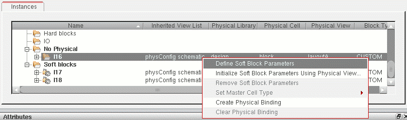
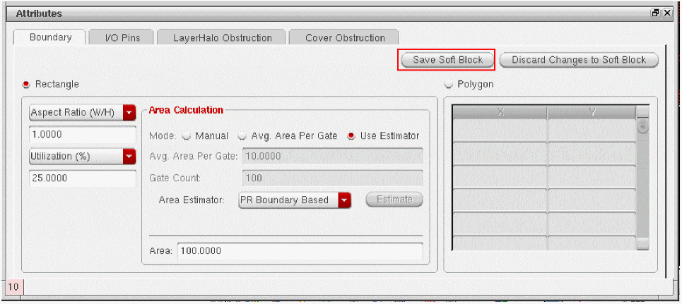

Defining Soft Block Parameters
Use the Define Soft Block Parameters command to define the boundary, pins, and blockage parameters for a selected instance in the schematic design. These parameters are used by the Generate Physical Hierarchy command to create soft blocks for these instances in the physical implementation.
When the Define Soft Block Parameters command is running, only the controls in the Attributes pane are enabled, ensuring you do not change the instance selection while you are editing the parameters. All other controls in the Configure Physical Hierarchy window remain disabled until you either save or discard the changes you have made to the soft block parameters. Similarly, cross-selection from other Virtuoso windows or assistants is delayed until you save or discard your changes.
To make changes to existing soft blocks that do not require the physical hierarchy to be regenerated, use the Edit Soft Blocks command instead. See Soft Block Editing.
To define soft block parameters,
- Select a component in the Instances table.
-
Right-click the instance and choose Define Soft Block Parameters.
If the selected component already has soft block parameters defined, the command is labeled Edit Soft Block Parameters.
The Instances table is disabled and the Attributes pane enabled, - Edit the parameters you require for your soft block. See
-
To save the parameters for the selected component, click Save Soft Block in the Attributes pane.
The Attributes pane is disabled and the Instances table re-enabled.
To discard any changes you made since the Attributes pane was enabled, click Discard Changes to Soft Block. - Repeat steps 1-4 for all the soft blocks you want to define.
-
From the Configure Physical Hierarchy menu bar, choose File – Save Floorplan File to save all your settings to a floorplan file for later re-use.
See Saving and Loading Soft Block Parameters to a Floorplan File.
Related Topics
Soft Block Mode in the CPH Window
Return to top